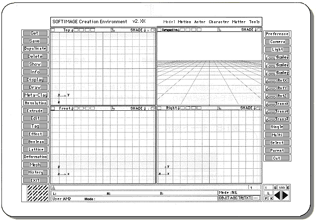
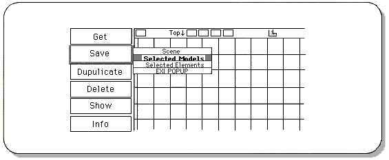
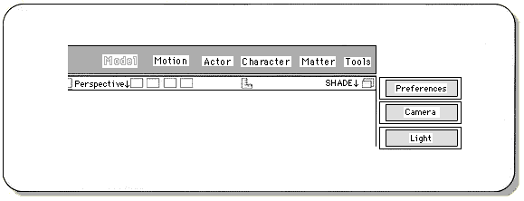
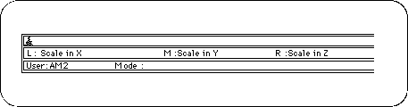

Return to previous page | Return to menu | Go to next page
When SOFTIMAGE is started, the screen shown in the figure appears. (When SOFTIMAGE is launched for the first time, this screen appears after the screen shown in Fig. 1-4.)

Grids (squares) are displayed in the four windows in the center of the screen. We will proceed while checking the 3D model in these four windows. In the initial state,
In addition, each window has an axis that shows three-dimensional three-dimensional directions of XYZ.
The gray rectangles lined up vertically at both ends of the screen are called “menus”. Some menus appear when you click them with the mouse, but these small menus are called “submenus” (pop-up menus).
Click the right mouse button to leave the submenu.

Notes on description
From now on, [] will represent menu commands and [] will represent hierarchical (sub) menus.
You can switch the working mode in the colored part at the top of the screen. There are 3D model creation modes and color addition modes, and the menu structure changes when the mode is switched.
To switch between modes, click the name of the mode with the mouse.

The functions of the current three mouse buttons are displayed in “L”, “M”, and “R” at the bottom of the screen.
